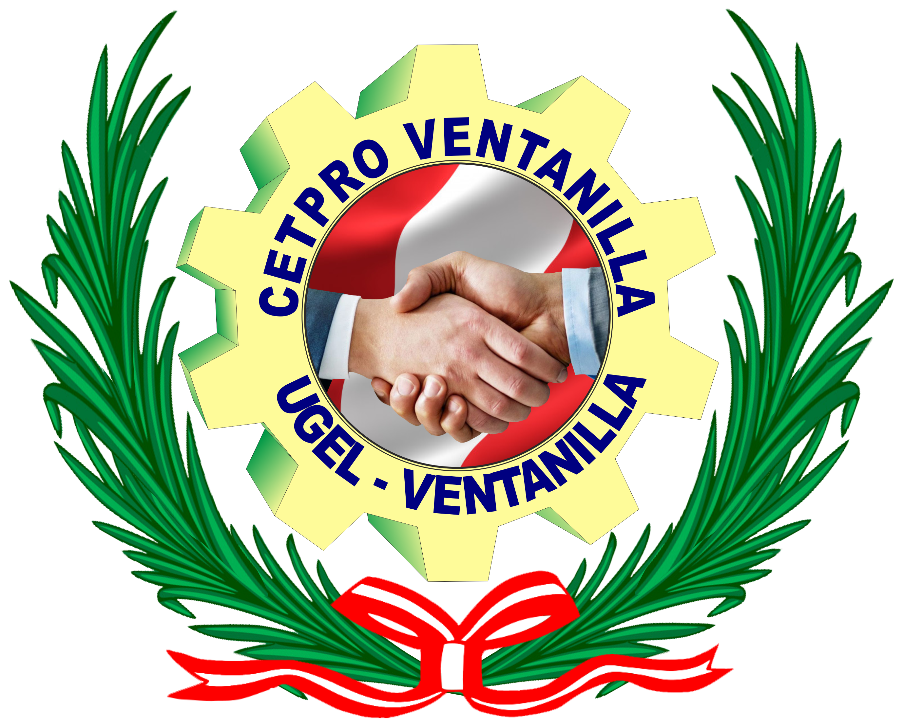

|  |
|---|
Departamentos del Perú |

.
El departamento de Amazonas es reconocido por su gran biodiversidad, con sus bosques de neblina, su páramo y privilegiados microclimas. En su fauna destacan los osos andinos y el gallito de las rocas. En Amazonas, encontramos el famoso sitio arqueológico de Kuélap, ciudadela construida entre los Andes y la Selva y que ya puede ser visitada a través de un teleférico. Por otro lado, esta zona de la selva peruana posee increíbles paisajes, lagunas gigantescas y majestuosas cataratas como Yumbilla y Gocta.
Ancash, al encontrarse ubicado entre la costa y sierra noroeste del Perú, posee una diversa geografía, tiene playas y a la vez montañas de relieves muy abruptos; sus nevados en la Cordillera de los Andes son los más altos del Perú. En Áncash se encuentran elevados picos, como el nevado Huascarán (6,768 msnm), también hermosos espejos de agua, pintorescos valles como el Callejón de Huaylas y senderos rodeados de flora que atraviesan la Cordillera de los Andes hasta llegar al sitio arqueológico Chavín de Huántar.
Ubicado en la sierra del Perú, Apurímac está compuesta por valles estrechos y profundos, con impresionantes abismos, frías mesetas y altas cumbres. Destaca por sus aguas termales, bosques cordilleranos, lagunas, flora, fauna, el enorme nevado de Ampay y el profundo Cañón Apurímac. Entre sus principales características están la arquitectura mestiza de sus edificaciones y las permanentes fiestas costumbristas en distintas ciudades como Abancay y Andahuaylas.
Vigilado por el famoso volcán Misti, Arequipa muestra su diversidad natural en sus profundos cañones como Cotahuasi y Colca, este último ubicado en el famoso valle del Colca, que es uno de los imponentes atractivos turísticos de este departamento del sur del Perú. El Centro Histórico de Arequipa es Patrimonio Cultural de la Humanidad por sus impresionantes edificaciones como la Basílica Catedral, el Monasterio de Santa Catalina, el Convento la Recoleta, entre otras muestras de impresionante arquitectura. Otros atractivos turísticos que podemos encontrar en la ´Ciudad Blanca´ es el Mirador de Yanahuara, los Baños Termales de Yura, las Cuevas de Sumbay, entre otros.
Con ubicación en la sierra central del Perú y atravesada por la Cordillera de los Andes, Ayacucho es tierra de iglesias y casonas de marcada arquitectura; asimismo, es tierra de artesanos, donde destaca la fabricación de los retablos ayacuchanos. Este departamento de la sierra tiene como característica su gran fervor religioso, siendo uno de los puntos favoritos para peruanos y extranjeros en Semana Santa. Entre las 33 iglesias de arquitectura colonial que posee, presenta una imperdible ruta para visitar ocho de ellas iniciando con La Catedral, ubicada en la Plaza Mayor.
Ubicado en el norte de la sierra peruana, el departamento de Cajamarca posee impresionantes sitios históricos y paisajísticos, como los Baños del Inca, las Ventanillas de Otuzco, Cumbemayo, el Cañón de Sangal, entre otros. La arquitectura cajamarquina es colonial, sus calles lucen hermosas casas y casonas. Por otro lado, destaca por su ganado vacuno y, por ende, por su producción láctea. Una fecha muy concurrida por los turistas es entre febrero y marzo, debido a los carnavales cajamarquinos.
Capital del imponente Imperio del Tahuantinsuyo y sede de la ciudadela de Machu Picchu, una de las 7 maravillas del mundo moderno, Cusco es considerado como el ombligo del mundo por haber sido el centro político y territorial del Imperio Incaico. A lo largo de la historia, Cusco ha recibido importantes distinciones como ser declarada Patrimonio Cultural de la Humanidad por la UNESCO en 1981, en Argentina fue distinguida como la "Capital Arqueológica de América del Sur" en 1933, en Italia como "Herencia Cultural del Mundo" en 1978, y en Perú, se le nombró la "Capital Histórica del Perú" en la Constitución de 1993. Por otro lado, Cusco posee otros atractivos turísticos como Valle Sagrado, el Barrio de San Blas, las minas de Sal de Maras y el pueblo de Paucartambo.
Ubicado en la sierra central del Perú, el departamento de Huancavelica es la sede de dos grandes culturas ancestrales: Wari y Chanca. Huancavelica se caracteriza por su biodiversidad, donde podemos encontrar saludables aguas termales, fértiles tierras, lagunas y nevados. En su pasado, fue centro militar de los Incas y luego de la conquista, una ciudad para la explotación de la plata y el mercurio. Asimismo, en Huancavelica se puede divisar sitios arqueológicos, templos y casonas del casco urbano.
Se ubica entre la sierra y selva central del Perú, Huánuco cuenta con hermosas zonas de bosques fértiles que poseen frutos codiciados como el café y cacao, además de una diversa flora y fauna preservada en el Parque Nacional de Tingo María. El departamento de Huánuco es una perfecta combinación entre sierra y selva, esto gracias a sus elevadas montañas, aguas termales, cuevas y lagunas. Fue poblado desde hace siglos por el hombre de Lauricocha y otras culturas que dejaron huellas de su presencia en Kotosh o Templo de la Manos Cruzadas.
Departamento costeño cuyas principales características geográficas son sus dunas e inmensos desiertos, donde se pueden practicar deportes extremos como el sandboard, además de haber sido sede de importantes competencias automovilísticas como el Rally Dakar. Sin embargo, lo más impresionante que podemos ver en Ica son las Líneas de Nasca, que de acuerdo a la investigadora María Reiche se trataría de un calendario astronómico hecho por antiguos peruanos. Por otro lado, Ica cuenta con la Reserva Natural de Paracas, la misma que está poblada de una generosa variedad de especies de flora y fauna, algunas únicas como el pingüino de Humboldt. Disfrutar de un buen vino, de la música afroperuana y paradisiacos paisajes como el oasis de la Huacachina, son solo algunos de los atractivos.
El departamento de Junín, ubicado en la sierra y selva central del Perú, es tierra de cataratas y valles de tierra con paisajes en su estado más natural. Podemos encontrar pueblos con profunda vocación religiosa como Tarma y Jauja, además de la Reserva Nacional con aves y mamíferos del ande. A su vez, Junín cuenta con extensos bosques en la provincia de Satipo y Chanchamayo, con jardines botánicos y albergues en comunidades nativas.
Sede de los impresionantes y famosos templos, pirámides y ciudades de barro de Chan Chan, La Libertad es un departamento ubicado en la costa norte del Perú. Su Imponente arquitectura colonial y costumbres arraigadas como la pesca en Caballitos de Totora (tradicionales embarcaciones de la costa norteña) son muestras claras que es un destino muy atractivo para el turismo en general. Asimismo, destaca por ser la cuna de la Marinera, baile nacional del Perú, y por sus playas, que atraen a miles de surfistas del mundo.
Lambayeque es la tierra del famoso Señor de Sipán, antiguo gobernante Mochica de siglo lll. Departamento en la costa norte del Perú, sede de importantes sitios arqueológicos aún por explorar como Sicán, Túcume y Chotuna; así como también museos con invalorables colecciones. Destaca también por sus playas como el balneario de Pimentel, Puerto Eten, San José y Santa Rosa.
Lima es la capital del Perú, ubicada en la costa central. Es la única capital sudamericana con salida al mar. Su arquitectura colonial se mantiene en gran estado, respetando su historia y logrando una armonía perfecta entre la tradición y sus edificaciones contemporáneas. El Centro Histórico de Lima fue declarado Patrimonio Cultural de la Humanidad por la UNESCO en 1991. Además, por la excelente calidad y pasión de cocineros peruanos como Gastón Acurio, Virgilio Martínez, entre otros, Lima ha sido denominada como la Capital Gastronómica de Latinoamérica
Departamento peruano famoso por cruzar el caudaloso río Amazonas, que es el más largo del mundo. En Loreto podemos encontrar paisajes exóticos con flora y fauna diversa, como en la Reserva Nacional Pacaya Samiria, que alberga a los delfines rosados, y la Reserva Nacional Allpahuayo Mishana, que se caracteriza por sus tipos de suelos y aves endémicas.
Madre de Dios es el departamento menos poblado del Perú. Ubicado en el al sureste del país, en la frontera con Bolivia y Brasil, es reserva de variada flora y fauna, así como refugio de especies en peligro de extinción como el lobo de crin y el ciervo de los pantanos. Esta región es hogar de comunidades nativas que promueven el ecoturismo. Entre Madre de Dios y Cusco se ubica el famoso Parque Nacional de Manu, uno de los espacios naturales protegidos más biodiversos del mundo.
Este departamento ubicado en la costa sur del Perú, posee quebradas, formaciones rocosas e inmensos desiertos. Sus casonas y calles han soportado, desde épocas de la colonia, terribles desastres naturales. En sus valles abundan ejemplares de frutas, la aceituna, el camarón y se producen exclusivos piscos y vinos. En Moquegua se encuentra el conocido Puerto de Ilo, por donde sale la carretera Interoceánica hacia el sur del Perú y los países vecinos de Brasil y Bolivia interconectando por estas vías al Océano Atlántico.
Pasco se ubica en el centro del Perú, entre la sierra y la selva. Es una tierra de contrastes marcados, donde la sierra y la selva forman una cadena de frías montañas y marcada vegetación. Esta región está poblada por comunidades nativas y ciudades como Huancabamba, Oxapampa, Pozuzo y Villa Rica. Posee una gran diversidad de flora y fauna; además de numerosas cataratas.
El departamento de San Martín está ubicado en el noreste del Perú. Entre sus principales atracciones naturales se encuentran cataratas, orquídeas y mariposas. Es reserva de especies en peligro de extinción que están protegidas en el Parque Nacional Río Abiseo y el Parque Nacional de la Cordillera Azul. Posee interesantes sitios arqueológicos como la ciudadela del Gran Pajatén.
El departamento de Tacna está ubicado al suroeste del Perú y tiene frontera con Chile. Es una tierra de desiertos y valles fértiles, entre la costa y la sierra. Sus extensos viñedos producen con generosidad vinos y piscos de exportación. Es importante destacar que esta heroica ciudad fue sede de importantes escenas de la Guerra del Pacífico.
Departamento costeño al norte del Perú, en la frontera con Ecuador. Tumbes posee un hermoso litoral compuesto por diversos ecosistemas donde destacan los Manglares de Tumbes, los cuales poseen un gran abanico de flora y fauna. Entre puntos turísticos obligatorios están Punta Sal, Playa Zorritos y Puerto Pizarro.
Ubicado en la selva central del Perú, es un departamento donde habitan muchas comunidades nativas que viven en la Amazonía sin renunciar a las costumbres y tradiciones. Ucayali posee paisajes bañados por ríos caudalosos, además de gigantes cataratas. La diversidad de especies de flora y fauna de Ucayali asombra permanentemente al planeta.
Ubicado en el norte del Perú, Piura posee los balnearios y playas favoritas de turistas y surfistas: Máncora, Colán, Los Órganos, Vichayito, Cabo Blanco (célebre por hospedar al escritor Ernest Hemingway) y Lobitos. En esta región podemos encontrar templos coloniales y pueblos de artesanos como Chulucanas y Catacaos. En este departamento norteño se sitúa el territorio árido más extenso del Perú: el desierto de Sechura.
Con ubicación en la sierra sur del Perú, el punto más representativo del departamento de Puno es el famoso Lago Titicaca, lugar sagrado de los incas y poblado de islas naturales y artificiales. Además, Puno posee sitios arqueológicos prehispánicos e iglesias que se caracterizan por una marcada arquitectura colonial. Su festividad religiosa denominada ´Virgen de la Candelaria´ atrae miles de feligreses y turistas cada año.